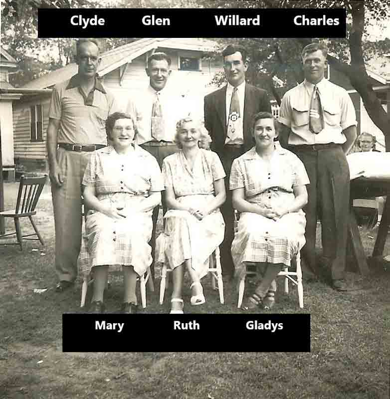
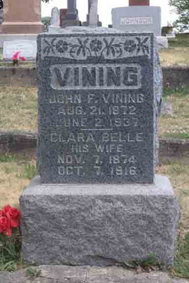
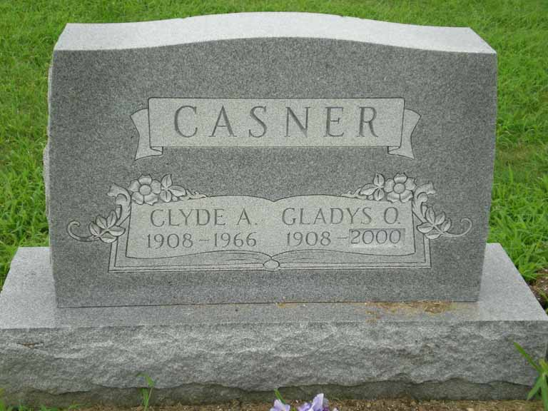

Documentation for John Franklin Vining - Clara Belle Hershberger
Children of John Franklin Vining and Clara Belle (Hershberger) Vining (photo taken 5 August 1951; source: Murray Neal Vining, grandson of Clyde Leo Vining by son David Allen Vining)

Death Data
Headstone for John Franklin Vining and Clara Belle (Hershberger) Vining, in Etna Green Cemetery, Etna Green, Kosciusko County, Indiana (from Find A Grave):

Headstone for Gladys O. (Vining) Casner, daughter of John Franklin Vining and Clara Belle Hershberger (Source: Find A Grave):
